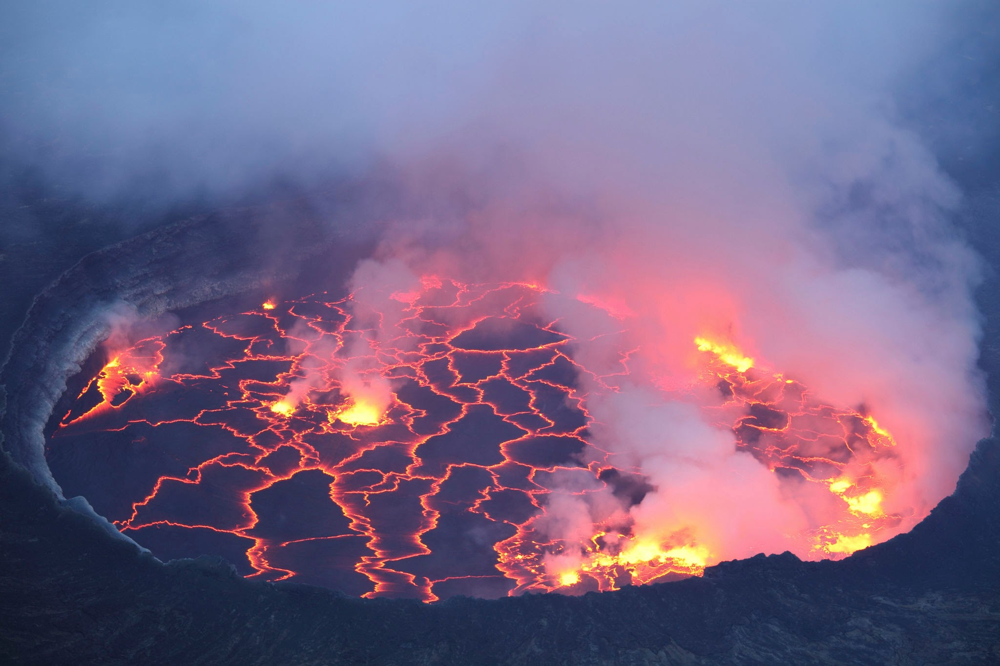
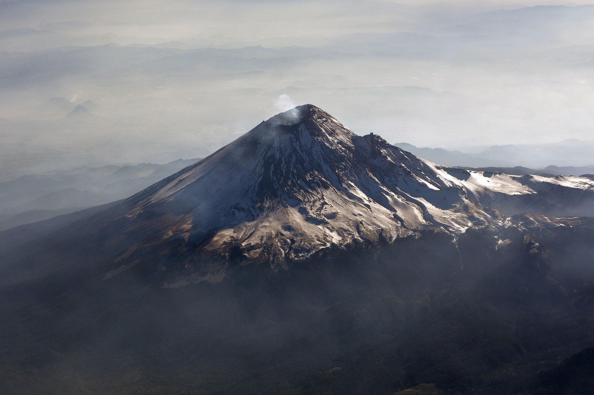
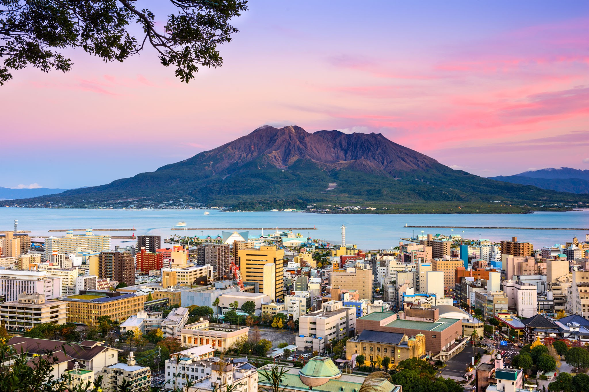
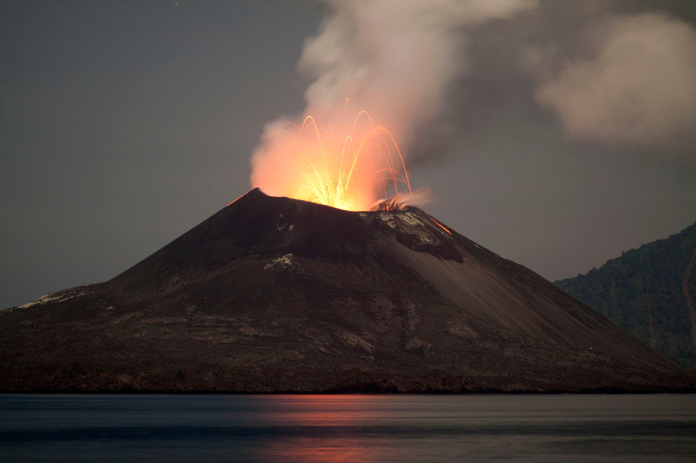

¡Volcanes del Mundo!


 dannaytm666@gmail.com
dannaytm666@gmail.com
¿Qué es un volcán?
Un volcán es una estructura geológica por la que emerge el magma que se divide en lava y gases provenientes del interior de la Tierra.
Características
- Fisuras eruptivas: por donde sale a la superficie el magma. En algunas circunstancias, en lugar de salir por la chimenea central, la lava se derrama por fisuras que pueden extenderse a lo largo de varios kilómetros sobre la superficie de la tierra.
- Conos: acumulaciones de lava y piroclastos fuera del volcán.
- Cráter: Boca o abertura de un volcán, por donde expulsa la lava, el humo, las cenizas y todos los materiales piroclastos.
- La columna eruptiva: es la columna formada por una mezcla de gases y material piroclasto que se eleva verticalmente en la emisión volcánica.
- Cámara magmática: se encuentra a grandes profundidades y es donde se acumula el magma y las chimeneas por las que sube a la superficie cuando hay una erupción.
- Magma: Masa mineral de las profundidades de la tierra, en estado viscoso, por el calor y cuya solidificación da origen a las rocas eruptivas.
- Dique: Masas estrechas que atraviesan rocas sedimentarias, metamórficas y plutónicas.
- Lava: Materias derretidas o en fusión que salen de los volcanes durante la erupción.
- Cono: Montaña o agrupamiento en forma cónica de lavas, cenizas y otras materias.
- Chimenea: Conducto para dar paso al humo y al magma.
- Roca sedimentaria: Material sólido más o menos compacto, originado en los procesos exógenos existentes en la corteza terrestre.
- Fumarolas: Son emisiones de gases de las lavas en los cráteres.
- Solfataras: Son emisiones de vapor de agua y ácido sulfhídrico.
- Mofetas: Son fumarolas frías que desprenden dióxido de carbono
- Geiser: Son pequeños volcanes de vapor de agua hirviendo
- Coladas lávicas: cuerpos magmáticos de pcoa continuidad lateral que solo alcanzan unos cientos de metros y una extensión longitudinal de cien metros a 10 kilómetros.
- Domos: acumulación de lavas derivadas de magma muy viscoso sobre la misma boca eruptiva que se enfría y puede llegar a taponar la boca.
¿Qué hacer en caso de una erupción volcánica?
- Proceda inmediatamente a la evacuación para evitar los escombros volantes, gases calientes, explosiones laterales y corrientes de lava.
- Tenga cuidado con los flujos de lodo. El daño que estos flujos pueden provocar aumenta con las lluvias persistentes y se mueven con más rápido de lo que nosotros podemos andar o correr.
- Mire corriente arriba cuando vaya a cruzar un puente y nunca lo cruce si se aproxima un flujo de lava.
- Use ropa que le cubra todo el cuerpo para proteger la piel.
- Use gafas y mascarilla o un paño húmedo para facilitar la respiración.
- Cierre ventanas, puertas y toda abertura al exterior.
- Asegúrese de que los animales se encuentran bajo un refugio cubierto.
- Busque refugio bajo techo.
- Evite áreas bajas donde los flujos de lodo pueden ser más peligrosos.
Volcanes famosos
Monte Nyiragongo
El monte Nyiragongo es un estratovolcán activo de 3471 m de altitud situado en las montañas Virunga, asociados al Rift Albertino.

Popocatépetl
El Popocatépetl es un volcán activo localizado en el centro de México. Se encuentra en los límites territoriales de los estados de Morelos, Puebla y el Estado de México. Se localiza unos 72 km al sureste de Ciudad de México, a 43 km de Puebla, a 63 km de Cuernavaca, y a 53 km de Tlaxcala.

Sakurajima
El Sakurajima es un volcán activo y antigua isla de Japón, situado en el sur de la isla de Kyūshū, en la prefectura de Kagoshima. Se encuentra en la parte de la bahía de Kagoshima conocida como bahía de Nishikie.

Krakatoa
El archipiélago de Krakatoa es el nombre que se da a un conjunto de islas volcánicas —en su mayoría casi desaparecidas— situada en el estrecho de Sonda, entre Java y Sumatra al suroeste de Indonesia.

Galería de Imágenes
Haz click sobre una imágen:
×

Video informativo:
https://www.youtube.com
Fuente:
https://www.ecoexploratorio.org
Créditos
Esta página fué creada por el alumno Torres Morales Danna Yuridia con el fin de concluir su proyecto escolar